Top 100 Albums of 2000-2009 (Part Four: 80-61)
By No Ripcord Staff
In lists as comprehensive as this, some of the albums lower down tend to get neglected in favour of the business end of the countdown. Whether you’re reading this on the day of publication or a few months after the winning record has been revealed, take the time to go through this selection, read what we have to say and maybe investigate further. No Ripcord may deem an album to be between the 61st and 80th best of the decade, but it could well change your life.
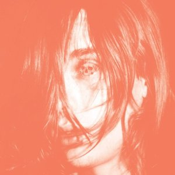80. Deerhunter
“Microcastle”
(Kranky/4AD – 2008)
I remember buying Microcastle. It was my freshman year of college, and I had been sick for weeks. My Mom was picking me up the next morning, so I used my sick Friday night with nobody around to go downtown and buy it. I went home, put it on, and listened to nothing else for at least a week. Gone were the hazy psych freakouts and the weird four-minute looping interludes; they’d been replaced with gloriously constructed shoegaze. The band rarely wandered, instead focusing on making excellent, tight pop songs. That tightness makes the ending of Twilight At Carbon Lake, where it all comes apart, one of the greatest closing tracks of all time. This beautiful record just falls open at the seams, and it’s nothing short of perfect. Andrew Baer
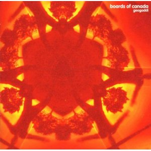79. Boards Of Canada
“Geogaddi”
(Warp – 2002)
Geogaddi was initially criticised by some for offering little in the way of progression from Boards Of Canada’s previous album, 1998’s Music Has the Right To Children, but it has since been recognised as a key work in their career. It revisits some of the innocence and the child-like melodies of their debut, but with a darker, occultist feel (the group deliberately play on this by giving the album a running time of 66 minutes 6 seconds). Listening to it in its entirety is an immersive and disquieting experience, as its indistinct samples of barely-heard vocals and distant children’s voices worm their way into one’s brain, like fragments of a half-remembered dream. The shorter tracks, or interludes, provide texture and mood, while the longer tracks supply the meat – of these, Alpha And Omega is a classic slice of retro-ambient techno, while Gyroscope just sounds like your stereo has been possessed. David Wood
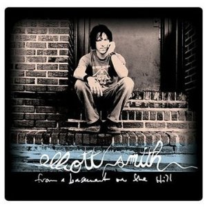78. Elliott Smith
“From A Basement On the Hill”
(ANTI- – 2004)
Elliott Smith was indisputably one of the great songwriters of his time, but he didn’t live long enough to complete what may have been his greatest work. Posthumously released, From A Basement On The Hill is about half the length Smith intended, but it certainly has no shortage of his greatest songs. All of his signatures are here – the heartfelt ballads, the endlessly dark lyrics – but Smith’s versatility shows through here perhaps better than on any other album, combining the lush textures and ornamentation of later work with the acoustic simplicity of his early career. Smith’s producer, Rob Schnapf, and ex-girlfriend, Joanna Bolme, who assembled the album following Smith’s suicide, do a great job of pacing the album, showing that versatility without sacrificing cohesion. It’s easy to wonder what would have been if Smith had survived, but we can still accept this great record for what it is. Forrest Cardamenis
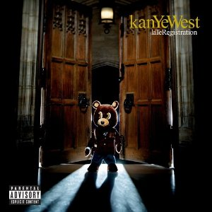77. Kanye West
“Late Registration”
(Roc-A-Fella/Def Jam – 2005)
Before Kanye West was vilified for interrupting a dull country music star’s acceptance speech, he made hip-hop that showed a love for A Tribe Called Quest, Curtis Mayfield and Gil Scott-Heron. The raps are smart, aware and personal. The beats are deep, funk filled and soulful. Like Thriller, there’s any number of songs that could be singles (I’d name them all but it would wreck my word count and you could always just check the track list; it’s pretty much all of them, barring the naff skits). To quote Gang Starr, it’s “great to dance to, great to romance to with a lot to say to you.” James McKenna
76. Björk
“Medúlla”
(One Little Indian/Warner Bros. – 2004)
In 2004, Icelandic singer-songwriter Björk, went full vocal. Around the time of Medúlla’s release, she more or less dismissed the use of traditional instruments. “Instruments are so over,” she said, responding to her observation with an album written and performed mostly with choral voices or mouthed percussion and sound. Medúlla is a meditative and beautiful album, one of the more passionate and moving pieces of music I’d heard at the time of its release. With the aid of vocal wizards like Mike Patton and human beatbox Rahzel, Björk shed much to create Medúlla: her voice unencumbered by production, electronics or beats, honest and exposed, an evolved artist captivating through the harmony and arrangements of songs like Desired Constellation, Oceania and Mouth’s Cradle. Whatever eccentricities and musical distinctions brought her well-deserved acclaim throughout the 90s, Medúlla uncovered a new layer of Björk’s abilities, certifying a talent that no one could deny. Sean Caldwell
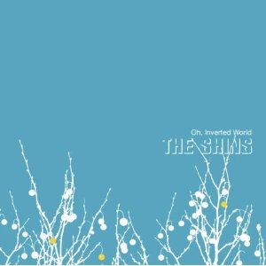75. The Shins
“Oh, Inverted World”
(Warner Bros. – 2001)
The thing that disappoints me about recent Shins albums is that James Mercer seems to have forgotten what he once had in his grasp. This album so perfectly captures the pleasure and innocence of pop music that aims only to please, that any dose of sophistication would have ruined it. I understand his desire to stretch out, but providing pure pop for now people is a worthwhile pursuit on its own. I was initially charmed by the skilful evocation of 1965, but it took a while to realize that the Shins were speaking to something deeper than cheap nostalgia. It’s the sound of catching fireflies on a warm summer evening, trying to pop a wheelie on your bike, or the cute girl in class writing her name on your loose leaf notebook, dotting her ‘i’s with a heart. Alan Shulman
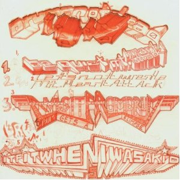74. Liars
“Drum’s Not Dead”
(Mute – 2006)
Drum’s Not Dead was my first Liars album, and it was quite an introduction. I hadn’t listened to it at all before buying it. I’d purchased it on Thom Yorke’s public recommendation, which was the sort of thing 18 year old Andrew did all the time (it’s also the reason I own any Clinic albums). It took me quite a while to get used to the record, but it was exhilarating when I was finally welcomed into its eerie, rhythmic world. Liars have always been dark, but Drum’s Not Dead is in a league of its own. It’s not just the subject matter, which is often nebulous, but the sound of the album. It just sounds creepy, and it does a fantastic job of pulling the listener in. Andrew Baer
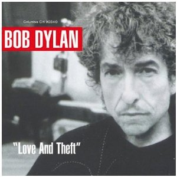73. Bob Dylan
“Love and Theft”
(Columbia – 2001)
It was hard to listen to Love and Theft in 2001 without the awareness that most modern pop/rock music suffers from a dearth of high intelligence and wit. As far as I can tell only Stephin Merritt stands out in the under sixty category of writers who could reel off a one liner on a par with Dylan’s work here, though never with this kind of breezy effortlessness. What’s more, Dylan has never sung better, meaning that even though his voice is shot, he has never so fully lived inside his words. And his band cooks. What more do you need? Alan Shulman
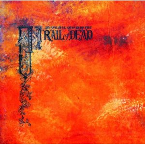72. …And You Will Know Us By The Trail Of Dead
“Source Tags & Codes”
(Interscope – 2002)
Before this record, Trail Of Dead were four bad-tempered guys from El Paso who invoked a maelstrom of aggression by ripping mounds of feedback and trashing their instruments. But once they accepted that melody was on their side, they instantly found their true calling. Rock bands usually employ tasteless, ostentatious devices when creating bombastic experiences, but Source Tags… was the poor man’s symphony – an impassioned, blistering art record that united the brash physicality of hardcore punk with an array of lush strings, interludes with accordions and gorgeously arpeggiated guitars. Its conductor, an erudite draughtsman named Conrad Keely, had a great affinity for both the pomposity of progressive music and the exactness of classical composition. Even the majors even got it right here – in a time when pop music was about to hit a ditch, this forward thinking defiance had just the right amount of kick to reignite the new millennium. Juan Edgardo Rodriguez
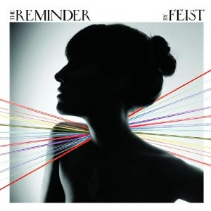71. Feist
“The Reminder”
(Cherrytree/Polydor/Arts & Crafts – 2007)
One thing the 00s were not short on was tasteful (and wildly successful) singer-songwriters, so what makes Feist's breakthrough album worthy of your time? The short answer is that it's a lot more fun than most of what her (sort-of) competition offered. No, she may not have had the strongest voice (although that's something of a selling-point; I'd take her unfussy approach over her more brassy rivals any time), but The Reminder does demonstrate a lightness of touch, and an enthusiasm for playing around with different styles and instrumentation – the usual acoustic sensitivity and coffee-table jazz are present and correct, but these are offset with electronica, as in the Nina Simone cover Sea Lion Woman, and out-and-out pop in the charming form of 1234, a song whose pleasures have impressively managed to survive Apple advert-induced overexposure. Mark Davison
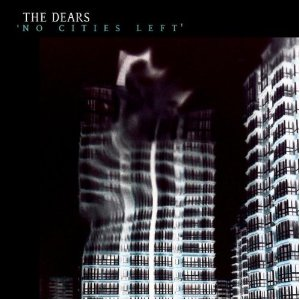70. The Dears
“No Cities Left”
(MapleMusic Recordings – 2003)
Punk may have made ambition a dirty word, but clearly no-one told The Dears' megalomaniac frontman Murray Lightburn. Every second of this record has been pored over time and time again, until it conveys just the right amount of anguish and despair. Obviously there’s melody in abundance too, but the overall feeling is that No Cities Left was a record The Dears simply had to make. Emotion was been poured into the lyrics and into Lightburn’s wounded howl, and the songs themselves are phenomenal creations too, from the amplified jangle of Don’t Lose The Faith to the heartstring-tugging epic, 22: The Death Of All The Romance. The feeling of a band giving it their all to reach their creative zenith is reinforced by the fact The Dears haven’t come close to matching it since, but nearly a decade ago, they gave over an hour of near-perfection. Joe Rivers
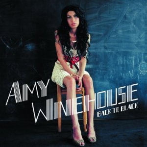69. Amy Winehouse
“Back To Black”
(Island – 2006)
Heavily influenced by the classic sounds of 60s soul and girl groups, Amy Winehouse’s sophomore set took these styles into new territory as she chronicled her life, love and heartbreak. The pristine production (courtesy of Mark Ronson and Salaam Remi) drew on the sounds of Motown and Brill Building pop, while the aching honesty of her lyrics turned Amy into a modern day blues siren. The timeless quality of this record found a place in the hearts of music fans the world over, won various accolades and turned Amy Winehouse into a bona fide superstar. Sadly, Back To Black would be her last complete album. With her smoky vocals, frank writing style and quirky-retro image, Amy Winehouse was one of British music’s most singular and unforgettable talents. Gary McGinley
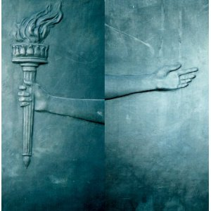68. Fugazi
“The Argument”
(Dischord – 2001)
Despite singer/guitarist and D.C. hardcore legend Ian MacKaye’s insistence that Fugazi’s now eleven-year absence is an “indefinite hiatus,” their 2001 album, The Argument, remains the band’s swansong. A perfectly conceived and, from what I can tell, frustratingly underrated album, The Argument might possibly be Fugazi’s most realized effort, their unmistakable and propulsive, funk-laden sound evolving into a melodious, rich and oft-times softened approach. From the social consciousness of Cashout to the brilliantly harmonized Life and Limb; the guitar-fuelled Full Disclosure to the captivating isolation of The Kill, Fugazi’s possible end temporarily caps off their flawless canon, cementing their importance in the development of modern rock music while ably demonstrating a way to navigate around the music industry’s push for commercially viable monotony. Sean Caldwell
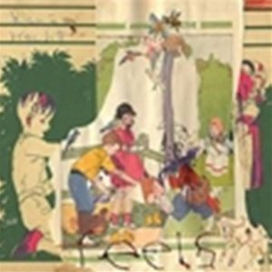67. Animal Collective
“Feels”
(Fat Cat – 2005)
Barraged by astringent neo-classicism, post-9/11 Manahatta found herself underneath a calculated assault by thousands of 20-somethings for all things associated with cocaine, dirty jeans, wild hair, and “good times.” Emerging from the same subway gusts were the four members of Animal Collective, whose strange pseudonyms, mask-wearing, and colorful, fun-loving t-shirts made The Strokes look like stressed-out guys from the Garment District. In 2005, Animal Collective was still experimenting with their sound, and Feels is their meditation on the strange timbres from mixing out-of-tune guitars and pianos with altered vocals, juggling the juxtaposition of the atmospheres of the Beach Boys, Asian zithers, and even a bit of the bustle of teenage emo. If anything, Feels is Animal Collective before they become fully immersed in electronic manipulation, before they turned into the paragon of post-Grateful Dead acid-friendly avant-rock. It was a time when avant-rock needed a fresh-direction. Feels was that direction. Michael Iovino
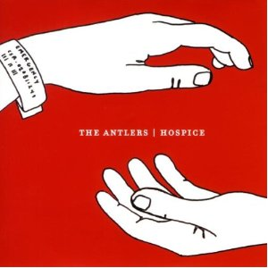66. The Antlers
“Hospice”
(Frenchkiss Records – 2009)
If anyone has ever told you that music can’t make them cry, they never listened to Hospice. The opening track creates such gorgeous melancholy that by Peter Silberman’s first line, “I wish that I had known in the first minute we met the unpayable debt that I owed you,” the stream of tears has already begun. And from that point, the only things that flow with more regularity are the achingly adept metaphors, be it Sylvia Plath’s suicide or a bear standing in for a fetus. With the spoken poem of Wake and the imprisoned yearns on Epilogue closing, all of the heartbreaking imagery that comes back makes Hospice one of the most fulfilled concept albums ever pressed, and also one of the saddest. With ten beautifully composed songs, just enough rock energy, and brilliant recursive motifs, The Antlers’ debut is also one of the decade’s greatest albums. Forrest Cardamenis
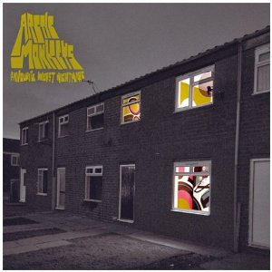65. Arctic Monkeys
“Favourite Worst Nightmare”
(Domino/Warner Bros./EMI – 2007)
On their debut television performance on Top of the Pops, Alex Turner reluctantly uttered, “Don’t believe the hype”, of course then leading us to ‘believe the hype’. Anyhow, unlike most, they lived up to it, and by the time of their second LP we were beginning to over-hype the hype until they managed to curtail any care of the word. Favourite Worst Nightmare took such a leap from the much-loved common-as-muck debut that we didn’t even care anymore about the concept. Turner’s lyrics were as deft as before yet more interesting, the arrangements became heart-stopping and exhilarating at the same time and the songwriting expertise is something that still remains unparalleled. They achieved with this album something which many of their peers failed to do which was to push their own boundaries to explore their unknown extremities and what they found was mesmerizingly invigorating. Matt Bevington
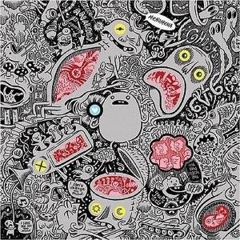64. Menomena
“Friend And Foe”
(Barsuk – 2007)
Portland trio, Menomena, began 2007 with their third album, Friend And Foe, a very melodic and arrhythmic collection of songs molded from loops and layers, saxophone blasts and piano chords, an inventive array of musical transitions and structures. Categorically “indie rock,” Friend And Foe married Menomena’s multi-instrumental talents with experimental excursions (Air Aid, Running), sentimentally charged tonality (Rotten Hell, My My) and near balladry (Wet and Rusting), supplying their intended demographic a multi-dimensionality that seemed, at least to me, lacking in other bands of Menomena’s ilk, a hipster-induced arrogance and self-importance in notable absentia next to the band’s intellectualized songwriting. As an added bonus, Friend And Foe had one of the best album covers I’d seen in some time, a wonderfully illustrated and die-cut package courtesy of cartoonist Craig Thompson that reintroduced the world to the wonderment of physical music. Sean Caldwell
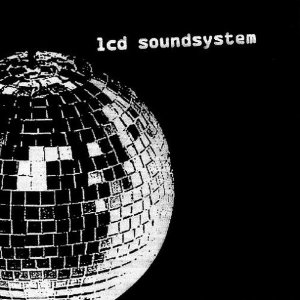63. LCD Soundsystem
“LCD Soundsystem”
(DFA Records – 2005)
LCD Soundsystem's self-titled debut is nothing short of epic – more than one hundred minutes of experimental electronica, punk and disco, spread over two CDs. Its release in 2005 was a catalyst in the resurrection of the dance-punk genre, with which DFA Records (co-founded by band member James Murphy) would ultimately become synonymous. Although the energy and ideas are the album's initial attraction, the genius lies within the subtle evolution and development of each track. Not everyone is a fan, however – some consider the album (and the band's work generally) to be unnecessarily drawn-out and repetitive. Regardless of your opinion, LCD Soundsystem is an undeniably influential record from one of the decade's most original acts. Craig Stevens
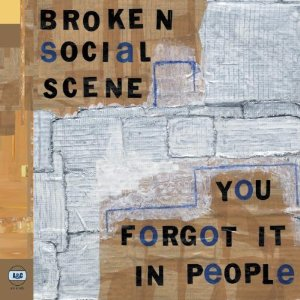62. Broken Social Scene
“You Forgot It In People”
(Arts & Crafts/Paper Bag – 2002)
The term ‘supergroup’ induces night terrors involving the half-eaten remains of once-great bands for most discerning music listeners - but Broken Social Scene, a collective of some of Canada’s finest indie artists, most definitely got it right. This is the group’s attempt at a pop record following their instrumental debut, and by seemingly cramming in as many different musicians into each recording session as possible, they’ve created a wonderfully expansive and communal feel to the album. That it still manages to sound so delicately put together is a testament to little-known producer David Newfeld, and this is a great sounding record: instruments all seem to have their own unique space in the mix, sometimes seemingly surrounding you, while the close-mic vocals sound like they’re being whispered gently in your ear. Joel Stanier
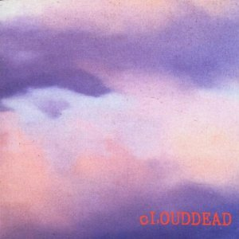61. cLOUDDEAD
“cLOUDDEAD”
(Mush Records/Big Dada – 2001)
The Cleveland trio that once was cLOUDDEAD – rappers Why, Doseone and producer Odd Nosdam – was ambitious in constantly provoking their listeners with the question: is what you’re listening to actually hip-hop? Some may not think it is, since Doseone and Why ignore all rhythms of rhyming; they're not just simply speaking but they are saying tons of unrhymed shit that no one would ever expect in a hip-hop tune. Take Doseone's “Wednesday's dirty blood clot / Hoards of leaves wear 3-D glasses”, for example. Combine these lyrics with long suites of ever-changing beats smothered in lo-fi crackles, and it's apparent that cLOUDDEAD aren't just making experimental hip-hop, they’re also colliding together decades of experimental poetics with decades of experimental music. The beauty of the word and the beauty of the beat: both make cLOUDDEAD a phenomenon of hip-hop's expansion into larger projects of conceptual thinking. Michael Iovino
10 July, 2012 - 08:37 — No Ripcord Staff